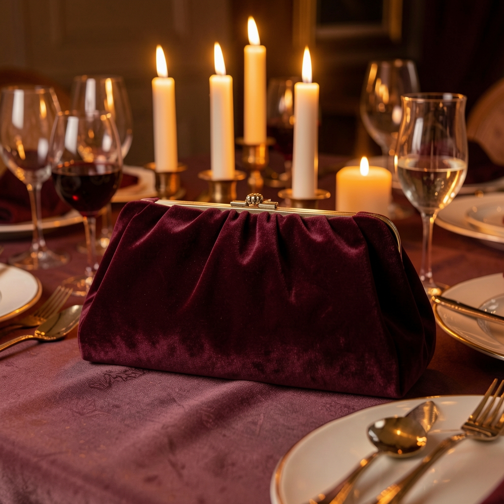

El bolso del que me fui a la gala sin nadie a mi lado
Fue el 23 de diciembre. En casa de mis padres las navidades ya habían empezado — risas, vino — y yo estaba en mi habitación con un vaso de vino y la tele apagada. Me arreglé igual. Fui igual. Volví distinta.

El bolso
Una clutch de gala con cadena removible. No de esas de boda barata que se descuadran al primer brindis: una de verdad, rígida, con acabado mate y un broche que hace clic con autoridad.
Cabe el móvil, el labial y una moneda para el ropero de la sala. Nada más. Y está bien: en una gala, lo que pesa de verdad no se lleva en el bolso.
Mi historia
Aquella Navidad me quedé sin acompañante de última hora. En casa de mis padres ya se oían las risas de siempre, y yo estaba arriba, con un vestido colgado de la puerta y dos opciones: me quedaba a ver la tele o iba sola a la gala a la que llevaba meses esperando ir.
Me arreglé despacio, sin prisa y sin testigos. Cogí la clutch, el abrigo y el coche. Bailé sola, hablé con desconocidos y volví de madrugada. Nadie me acompañó ni al entrar ni al salir. Y sin embargo es una de las noches de las que más orgullosa estoy.
Hay noches que empiezan con un vaso de vino y la tele apagada y acaben cambiándote la manera de mirarte.